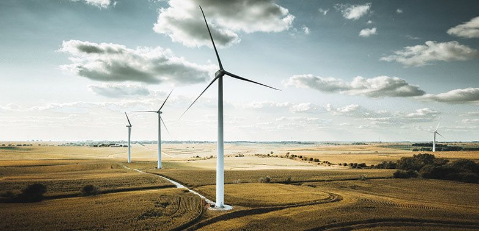

Green Energy Revolution: Transforming the Power Sector
By Jane Smith
Published on October 5, 2024
Introduction
The world is witnessing a remarkable shift towards renewable energy sources, marking a true green energy revolution. This article explores how this transformation is reshaping the power sector and paving the way for a sustainable future.
Current State of Green Energy
Renewable energy sources are gaining ground rapidly:
- Solar Power: Photovoltaic technology advancements and decreasing costs
- Wind Energy: Onshore and offshore wind farms expanding globally
- Hydroelectric Power: Modernizing existing dams and developing new projects
- Geothermal Energy: Tapping into Earth's heat for consistent power
- Biomass: Utilizing organic matter for energy production
Challenges in Adoption
Despite progress, several challenges remain:
- Intermittency issues with solar and wind power
- Energy storage limitations
- Grid infrastructure adaptation needs
- Initial high costs of transitioning from fossil fuels
- Policy and regulatory hurdles in some regions
Future Prospects
The future of green energy looks promising:
- Advancements in energy storage technologies
- Smart grid development for better energy management
- Increasing corporate and government commitments to renewable energy
- Emerging technologies like floating solar farms and airborne wind energy
Conclusion
The green energy revolution is well underway, transforming how we generate, distribute, and consume power. As technology advances and adoption increases, renewable energy is set to play a crucial role in combating climate change and creating a sustainable energy future.
For more information on green energy developments, visit Example Green Energy Report.